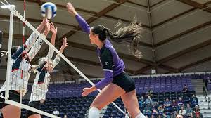

THE BASICS OF VOLLEYBALL
The guide to having a more in depth understanding of the sport
This website will contain the basic information on volleyball. It will contain mainly the rules of the sport and the different positions that a player can play.

This website will contain the basic information on volleyball. It will contain mainly the rules of the sport and the different positions that a player can play.
Volleyball is a sport that is played by two teams of six players on a rectangular court divided by a net. The objective of the game is to send the ball over the net and to ground it on the opponent's side of the court, while preventing the same effort by the opponent. Each team is allowed a maximum of three touches to return the ball to the opponent's side. The team that wins a rally scores a point and serves the ball for the next rally. The first team to reach 25 points with at least a two-point lead wins the set, and matches (college) are typically played in a best-of-five format.
The six players all have designated positions on the court. The positions are: Outside Hitter, Middle Blocker, Rightside Hitter, Setter, and Libero. Depending on the position they play they have to be in a certain sport on the court at certain times in order to fulfill their role.
A global sport built on continus motion. Volleyball has one of the shortest reaction times in sports.

A volleyball is built in layers. At its core is a rubber bladder. Around that are fabric layers that help the ball keep its shape, made from synthetic leather panels.

Statistics are important in volleyball for tracking player performance and team success. One of the most important being hitting efficiency.
